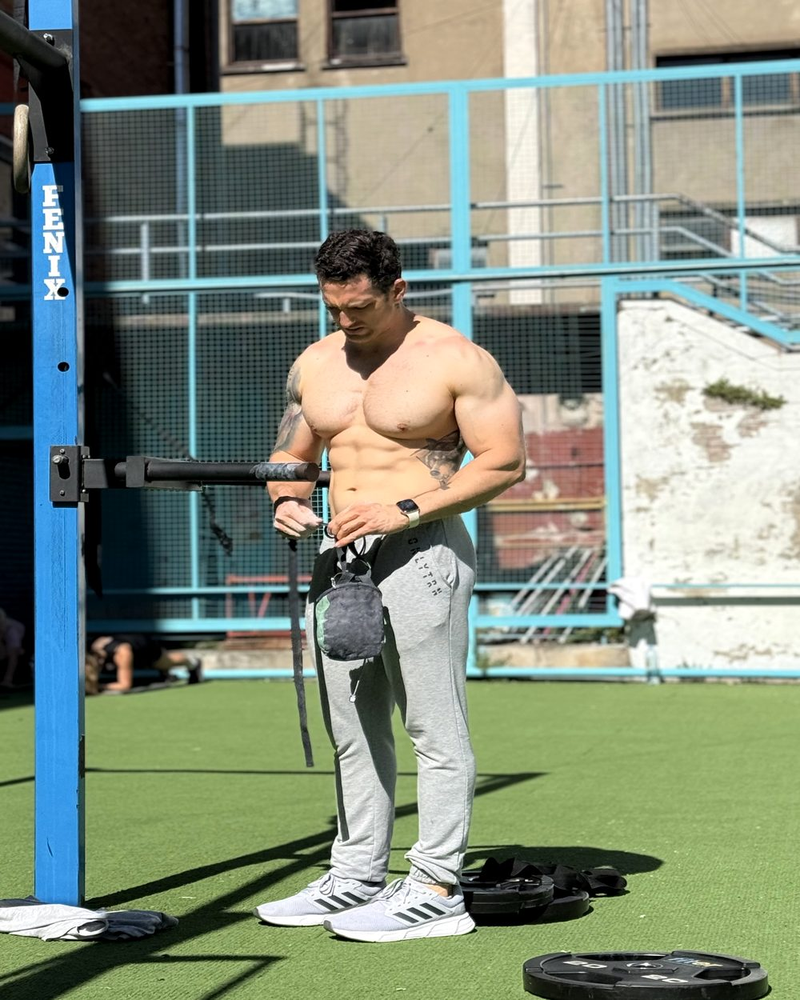

A través del Ayuno Intermitente — Método 4 Fases. Una progresión real, diseñada para que tu cuerpo se adapte sin forzar nada.
Dejame tu nombre y email y te mando la Fase 1 gratis ahora mismo.
Sin spam. Sin compromisos. Solo el protocolo.
Revisá tu bandeja de entrada — te mandamos la Fase 1 ahora mismo.
Si no aparece en 5 minutos, revisá spam.

Buscás algo mucho más profundo. Y este protocolo está diseñado exactamente para eso.
Dejás de necesitar comer cada pocas horas para funcionar. Tu cuerpo aprende a usar sus propias reservas.
Cuando el cerebro usa cuerpos cetónicos como combustible, el enfoque cambia de manera notable.
No se trata de una cifra en la balanza. Se trata de mirarte al espejo y reconocerte.
Elegís cuándo comés, qué comés y por qué. No el hambre, no la ansiedad, no el hábito.
Una progresión diseñada para que tu cuerpo se adapte sin forzar nada. Cada fase tiene su propio protocolo de alimentación y entrenamiento.
Semanas 1–2. Ventana 20:00–08:00. Empezás a recalibrar tus señales de hambre y a estabilizar tu energía.
Semanas 3–5. El estándar dorado. Tu cuerpo empieza a favorecer adaptaciones metabólicas profundas.
Semanas 6–8. Puede favorecer procesos de regeneración celular. Recomposición corporal avanzada.
Semana 9+. Máxima flexibilidad metabólica. No es el objetivo para todos — y eso está bien.
Gratis. En tu bandeja de entrada en menos de 5 minutos.
Dejame tu nombre y email y arrancamos ahora.
Sin spam. Sin compromisos. Solo el protocolo.
Revisá tu bandeja de entrada — te mandamos la Fase 1 ahora mismo.
Si no aparece en 5 minutos, revisá spam.